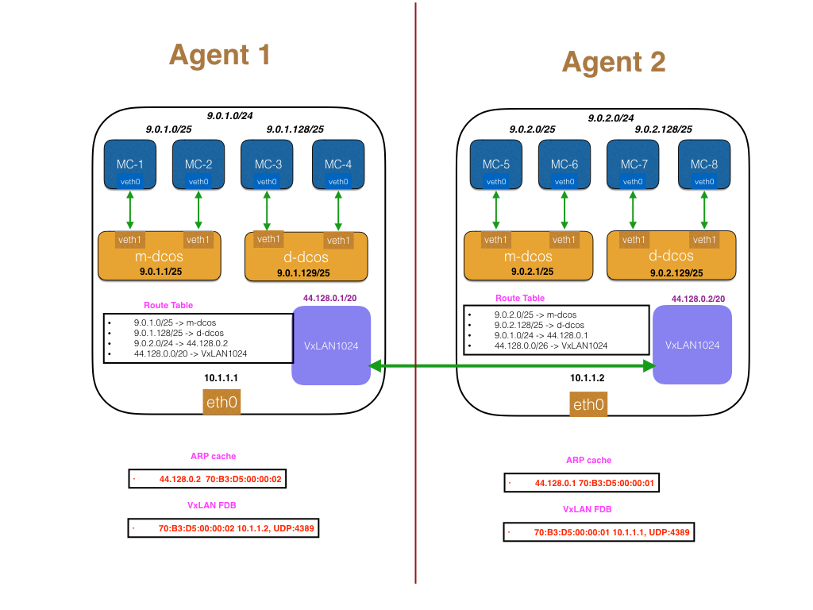
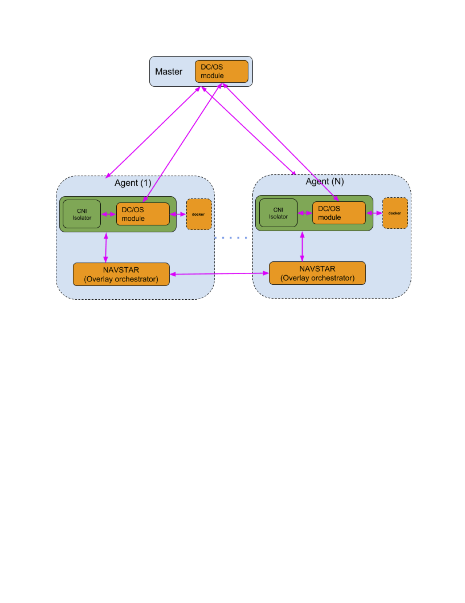

DC/OS overlay: An IP-per-Container solution for DC/OS
Introduction
From a networking standpoint, in order to provide an end-user experience similar to that provided by a virtual machine environment it’s important to provide each container with its own IP address and network namespace. Providing containers with an isolated network stack ensures logical network isolation as well as network performance isolation between containers. Further, an ip-per-container allows the user/developer to use the traditional network operational tools (traceroute, tcpdump, wireshark) and processes they are familiar with, and helps their productivity in debugging network connectivity/performance issues. From an operational standpoint it becomes much easier to identify container specific traffic, and hence simplifies enforcement of network performance and security policies for containers.
A default IP-per-container solution for DC/OS needs to be agnostic of the network on which DC/OS runs. Thus, in order to achieve IP-per-container we need to use an virtual network. Overlays make the container network topology independent of the underlying host network. Further, overlays provide complete segregation of container traffic from host traffic making policy enforcement on container traffic much simpler and independent of the host traffic. The challenge with implementing overlays is the cost of encapsulating and decapsulating container traffic, when containers send and receive traffic. To minimize the impact of these encap and decap operations on container network throughput, it is imperative that the overlay implements the encap/decap operations as part of the packet processing pipeline within the kernel.
To achieve an IP-per-container solution for DC/OS, using overlays, we therefore need to choose an overlay technology that is actively supported by the Linux kernel. The most common overlay supported by the linux kernel is the VxLAN.
The overlay design for DC/OS makes the following assumptions/observations:
- We cannot assume a centralized IPAM, due to lack of guarantee of availability and reliability on a centralized IPAM.
- We need to avoid layer 2 flooding to make the network scalable. This implies that we can’t rely on broadcasting ARPs to learn container’s MAC addresses.
- The solution needs to support Unified Containerizer a.k.a (MesosContainerizer) and DockerContainerizer, i.e., on the same overlay we should be able to run Docker and Mesos containers and allow them to talk to each other.
In this document, based on the above assumption/constraints, we describe a software architecture for a control-plane within DC/OS that will allow the implementation of a VxLAN based layer 3 overlay.
Before describing the software architecture we describe the packet flow that will explain the operational aspects of the overlay, which will help build an intuition for the various components described in the software architecture.
DC/OS overlay in action

Figure 1: Agent configuration for containers running on MesosContainerizer and Docker once the VxLAN has been configured.
We can explain the operation of the overlay with an example. Figure 1 shows a 2 agent DC/OS cluster. To get the DC/OS overlay to work we need to allocate a subnet large enough to address the containers running on the overlay. The address space selected should be non-overlapping from the host network to ensure any misconfiguration when setting up the overlay. In the exampe shown, the host network is 10.0.0.0/8 and the address space chosen for the overlay is 9.0.0.0/8 .
Ideally we would like an IPAM to perform address allocation for all containers on the overlay. However, it’s hard to solve reliability and consistency issues with a global IPAM. E.g., how do we notify the IPAM when the slave dies? What should be the availability of the IPAM to guarantee a 99% uptime of the cluster (without IPAM containers cannot function)? Given the complications arising from a global IPAM, we choose to go with a simpler architecture of carving out the address space into smaller chunks, and allowing the agent to own this chunk. In the example, the 9.0.0.0/8 space has been split into /24 subnets, with each subnet being owned by the agent. In the example Agent 1 has been allocated 9.0.1.0/24 and Agent 2 has been allocated 9.0.2.0/24.
Given a /24 subnet for the agent, the subnet needs to be further split into smaller chunks since the mesos agent might need to launch Mesos containers, as well as Docker containers. As with the agents, we could have a static allocation between Mesos containers and Docker containers. In the example we have statically carved out the /24 space into a /25 space for Mesos containers and Docker containers. Also, it’s important to note that the Mesos containers are launched by the MesosContainerizer on the “m-dcos” bridge and the Docker container are launched by the DockerContainerizer, using the Docker daemon, on the “d-dcos’ bridge. Let us describe the packet flow for container-to-container communication.
Container-to-Container communication on the same host
Assume a Mesos container on 9.0.1.0/25 wants to talk to a Docker container on 9.0.1.128/25. The packet flow will be as follows:
- Container on the 9.0.1.0/25 sends packet to the default gateway, which is the “m-dcos” bridge, allocated the IP address 9.0.1.1/25.
- The m-dcos bridge will consume the packet, and since m-dcos bridge exists in the host network namespace it will send the packet up the network stack to be routed.
- The packet will be sent to d-dcos which will switch the packet to the 9.0.1.128/25 subnet.
Container-to-Container communication on different hosts
Assume a Mesos container on 9.0.1.0/25 (Agent 1) wants to talk to a Docker container on 9.0.2.128/25 (Agent 2). The packet flow will be as follows:
- The packet from 9.0.1.0/25 will be sent to the default gateway on the “m-dcos” bridge (9.0.1.1/25). The bridge will consume the packet and send it up the network stack. Since bridge is in the host network namespace the packet will get routed using the host network namespace routing table.
- The host will have a route 9.0.2.0/24 -> 44.128.0.2 (we will explain in the next section how this route is installed), which basically tells the host that to send this packet you need to send it via VxLAN1024 (there is also an entry for 44.128.0.0/20 -> VxLAN1024).
- Since 44.128.0.2 is directly connected on VxLAN1024. The kernel will try to ARP for 44.128.0.2. During configuration of the overlay DC/OS would have installed an entry in the ARP cache for the VTEP end-point 44.128.0.2, and the kernel ARP lookup would succeed.
- The kernel routing module would send the packet to the VxLAN device VxLAN1024 with the destination MAC set to 70:B3:D5:00:00:02.
- To forward the packet VxLAN1024 needs an entry with the MAC address 70:B3:D5:00:00:01 as the key. This entry in the VxLAN forwarding database would be programmed by DC/OS. Pointing to the IP address of Agent 2. The reason DC/OS is able to program this entry is because it is aware of the agent IP and the VTEPs existing on all the agents.
- At this point the packet is encapsulated in a UDP header (specified by the VxLAN FDB), and send to VTEP existing on Agent 2.
- The VxLAN1024 on Agent 2 decapsulate the packet, and since the destination MAC address is set to VxLAN1024 MAC address on agent 2, the packet will be consumed by VxLAN1024 on Agent 2 to be routed.
- In Agent 2 the routing table has entries for the subnet 9.0.2.128/25, as directly connected to the bridge “d-dcos”. The packet will therefore be forwarded to the container connected to the “d-dcos” bridge.
Challenges
As must be evident from the packet walk through for “Container-to-Container communication on different hosts”, for the DC/OS overlay to function there are quite few pieces of metadata that need to be pre-configured into the agent for the routing and switching to work properly. Here we will list the information that is required by the DC/OS overlay to operate properly.
- Within DC/OS we need a SAM (A Subnet Allocation Module that will inform the agents of the subnets that have been allocated to them).
- Within the agent, there needs to be an entity that configures the docker daemon with the portion of the subnet (in the example the 9.0.1.128/25 network) that has been allocated to the docker daemon.
- Within the agent, there needs to be an entity that allocates IP addresses to the containers launched by the MesosContainerizer (in the example the 9.0.1.0/25 network).
- Within DC/OS we need an entity that will program the VxLAN forwarding database on each agent, with the MAC addresses of all the VTEPs existing on all the agents, along with the encap information (agent IP, UDP port) required to encapsulate the packets correctly. The same entity also needs to program the ARP cache on each agent with the MAC address of all VTEPs, for their corresponding IP addresses.
The challenges gives us a laundry list that need to be addressed to make the DC/OS overlay functional. In the next section we will describe the software architecture of the control plane for DC/OS overlay. The control-plane will configure and programme the metadata listed in the “Challenges” section to make it functional.
Software Architecture

Figure 2: Software architecture for DC/OS overlay control plane.
Figure 2 describes the software architecture that we plan to implement to realize a control plane for the DC/OS overlay. The blocks in orange are the missing pieces that have to be built. Below, we describe each of the missing pieces and functionality that they provide.
DC/OS modules for Mesos
Code: https://github.com/dcos/mesos-overlay-modules.git To configure the underlying DC/OS overlay we need an entity that can allocate subnets to each agent. The entity also needs to configure linux bridges to launch Mesos and Docker containers in their own subnets. Further, the VTEP on each Agent needs to be allocated IP addresses and MAC addresses and the Agent routing table needs to be configured with the correct routes to allow containers to communicate over the DC/OS overlay.
We plan to achieve all the above requirements for the DC/OS overlay by having two Mesos modules, a master DC/OS module and an Agent DC/OS module. We list the responsibilities of both these modules below:
Master mesos overlay module:
The master module will be run as part of the Mesos master and will have the following responsibilities:
- It will be responsible for allocating the subnet to each of the agents. We will describe in more detail how the master module will use the replicated log to checkpoint this information for recovery during failover to a new Master.
- It will listen for the agent overlay modules to register and recover their allocated subnet. The agent overlay module will also use this endpoint to learn about the overlay subnets allocated to it (in case of multiple virtual networks), the subnets allocated to each of the Mesos and Docker bridges within an overlay and the VTEP IP and MAC address allocated to it.
- It exposes an HTTP endpoint “overlay-master/state” that presents the state of all the virtual networks in DC/OS. The response of this endpoint is backed by the following protobuf: https://github.com/dcos/mesos-overlay-modules/blob/master/include/overlay/overlay.proto#L86
Agent mesos overlay module:
The agent overlay module runs as part of the Mesos agents and has the following responsibilities:
- It is responsible for registering with the master overlay module. After registration it retrieves the allocated agent subnet, the subnet allocated to its Mesos and Docker bridges and VTEP information (IP and MAC address of the VTEP).
- Based on the allocated agent subnet, it is responsible for generating a CNI (Container Network Interface) network config to be used by the
network/cniisolator for theMesosContainerizer. - It is responsible for creating a Docker network to be used by the
DockerContainerizer. - It exposes an HTTP endpoint
overlay-agent/overlaysthat is used by the Virtual Network Service to retrieve information about the overlays on that particular agent.
Using replicated log to coordinate subnet allocation in Master:
For MesosContainerizer and DockerContainerizer to launch containers on a given subnet, the Mesos agent needs to learn the subnet allocated to itself. Further, the subnet needs to be learned before the MesosContainerizer or the DockerContainerizer start.
The master overlay module will be responsible for allocating the subnet, the VTEP IP and the MAC address associated with VTEP. While allocating new subnets and caching this information itself is straightforward, maintaining this information consistently during master failover is challenging. To allow for this information persist across master failover the master overlay module will use the Mesos replicated log. The algorithm that allows the master overlay module to checkpoint this information and recover it, once master failover has been completed is as follows :
- Whenever a new agent overlay module registers with the master module, the master module will try allocating a new subnet, a new VTEP IP and a new MAC address for the VTEP to the registered agent module. It will however, not respond to the registration request, with the allocated information till this information has been written , successfully, into the replicated log.
- On failover the master module will read the replicated log and recreate the subnet, VTEP IP, and VTEP MAC address information and build a cache of this allocated information in memory.
- The agent overlay module’s registration request would fail in case the registration request was received in the middle of a Master failover. In this case it is the responsibility of the agent overlay module to locate the new master and try registering with the overlay module on the new master.
Configuring MesosContainerizer and DockerContainerizer to use the allocated subnet.
Once DC/OS module retrieves the subnet information from the master DC/OS module, it performs the following operations to allow MesosContainerizer and DockerContainerizer to launch containers on the overlay:
For MesosContainerizer the DC/OS module can generate a CNI config at a specified location. The CNI config will have the bridge information and IPAM information for the network/cni isolator to configure containers on the m-
For DockerContainerizer the DC/OS module, after retrieving the subnet, will create a “docker network” with the canonical name “d-
NOTE: The assumption for DockerContainerizer to work with the DC/OS overlay is that the host is running Docker v1.11 or greater.
NOTE: The default
Virtual Network Service: Overlay Orchestration
Code:https://github.com/dcos/navstar.git Virtual Network Service is the overlay orchestrator service running on each agent which is responsible for the following functionality. It is a system which contains non-realtime components of the DC/OS overlay, as well as other networking-related chunks of DC/OS. The Virtual Network Service running on each agent is responsible for the following functionality:
- Talking to the agent overlay module and learning the subnet, VTEP IP and MAC address allocated to the agent.
- Creating the VTEP on the agent.
- Programming the routes to various subnets on various agents.
- Programming the ARP cache with the VTEP IP and MAC addresses.
- Programming the VxLAN FDB with the VTEP MAC address and tunnel endpoint information.
- Using Lashup, a distributed CRDT store, to reliably disseminate agent overlay information to all agents within the cluster. This is one of most important functions performed by Virtual Network Service, since only by having global knowledge of all the agents in the cluster can Virtual Network Service program the routes on each agent for all the overlay subnets on all the agents.